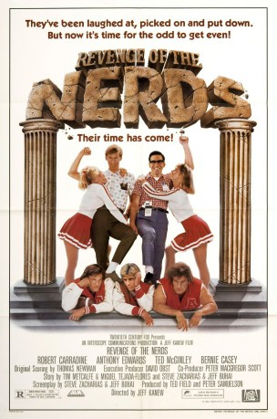
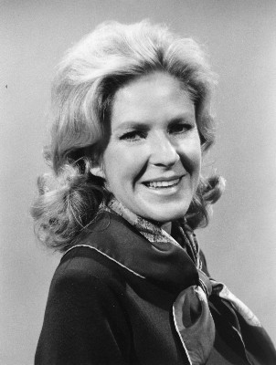

#7373 Die Rache der Eierköpfe
Alternativ: Revenge of the Nerds
 
 IMDB-Wertung: 6.6 / 10
IMDB-Wertung: 6.6 / 10  Metascore: 0
Metascore: 0 
When lovable nerds Gilbert and Lewis embark on their freshman year at Adams College, little do they realize the dangers that await them. They are beset by taunting from the jocks of Alpha Beta fraternity, which only worsens when the jocks accidentally burn down their house and toss the freshmen out of the freshmen dorm. To make matters more problematic, Lewis develops a crush on pretty Betty Childs, popular sorority sister and quarterback's girlfriend. Joined by the aptly named Booger and the violin-playing Poindexter, the nerds soon realize they must form their own fraternity in self-defense. Soon the tables are turned as the nerds employ high-tech warfare against the jocks.... but can they really succeed and make a difference?
Jahr: 1984
Dauer: 86 Minuten
FSK: 16
Land: USA Studio: 20th Century FoxTonspuren: DD2.0 - ,
Untertitel:
Auflösung: 1080p (1920x1040) Größe: 6686 MB
Genre: Komödie
Regisseur: Jeff Kanew
Drehbuch: Tim Metcalfe
Soundtrack:
Darsteller:
 Robert Carradine als Lewis
Robert Carradine als Lewis Anthony Edwards als Gilbert
Anthony Edwards als Gilbert Timothy Busfield als Poindexter
Timothy Busfield als Poindexter Curtis Armstrong als 'Booger'
Curtis Armstrong als 'Booger'- Larry B. Scott als Lamar
 Brian Tochi als Takashi
Brian Tochi als Takashi- Julia Montgomery als Betty Childs
- Michelle Meyrink als Judy
 Ted McGinley als Stan Gable
Ted McGinley als Stan Gable- Donald Gibb als Ogre
 James Cromwell als Mr. Skolnick
James Cromwell als Mr. Skolnick David Wohl als Dean Ulich
David Wohl als Dean Ulich John Goodman als Coach Harris
John Goodman als Coach Harris Bernie Casey als U.N. Jefferson
Bernie Casey als U.N. Jefferson-  Alice Hirson als Mrs. Lowe
 F. William Parker als Sergeant
F. William Parker als Sergeant Marianne Muellerleile als Woman
Marianne Muellerleile als Woman- Henry Kendrick als Trainer
 Brad Grunberg als Plaid Brother
Brad Grunberg als Plaid Brother Greg Berg als Larry Fine robot , uncredited
Greg Berg als Larry Fine robot , uncredited- Andrew Cassese als Wormser
- Matt Salinger als Burke
- Roger Carter als U.N. Assistant
- Kres Mersky als Mrs. Wormser
- Lisa Welch als Suzy
- Suzanne B. Hayes als Michelle
- Shawn Siqueiros als Joanne
- Sandra Katzel als Connie
- Fumio Kodama als Japanese Man
- Lance Lombardo als Lamar's Date
- William B. Wilson als Tough-Looking Guy
- Carl Cherry als Tri-Lamb
- Adam Frank als Blond Nerd
- Taylor Samuels als Plaid Brother
- James Anklam als Hooded Alpha Beta
- Matthew M. Haugh als Alpha Beta
- William C. Horning als Alpha Beta
- Angela C. Gardaphe als Pi
- Lisa Kolasa als Pi
- Kristen Kinderman als Pi
- Kay Strunk als Pi
- Gamble Baffert als Rho-Rho
- Brian Lover als Rho-Rho
- Jerry Kurinsky als Rho-Rho
- Tonja Sue Philbee als Rho-Rho
- Monique Sorenson als Rho-Rho
- Calon Blackledge als Rho-Rho
- Scott Bird als Nerd
- David Moskowitz als Nerd
- Steven Duran als Nerd
Datei: X:\1984\Rache der Eierköpfe, Die (1984, FSK16, 1920x1040).mkv seit 20.10.2017
Festplatte: HD 1980-1986
 Es gibt insgesamt 46 Filme in der Gruppe '1984'
Es gibt insgesamt 46 Filme in der Gruppe '1984'